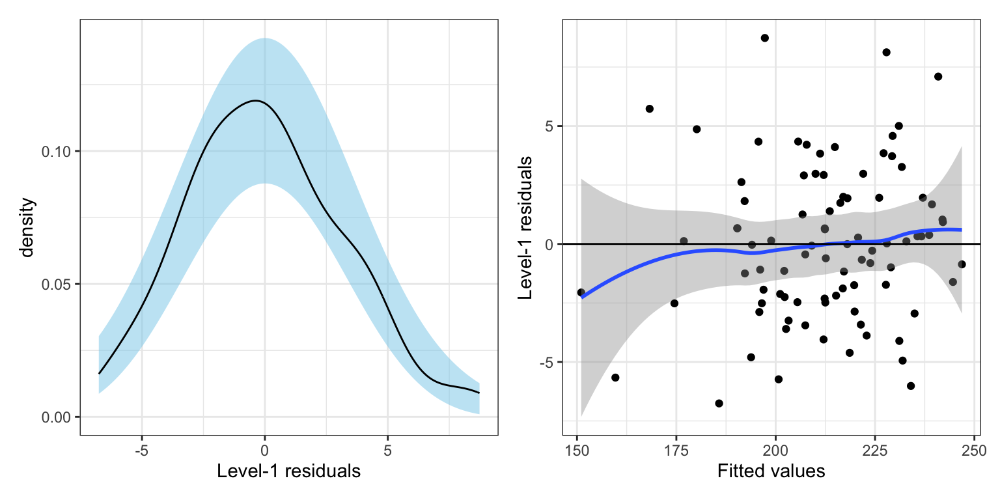
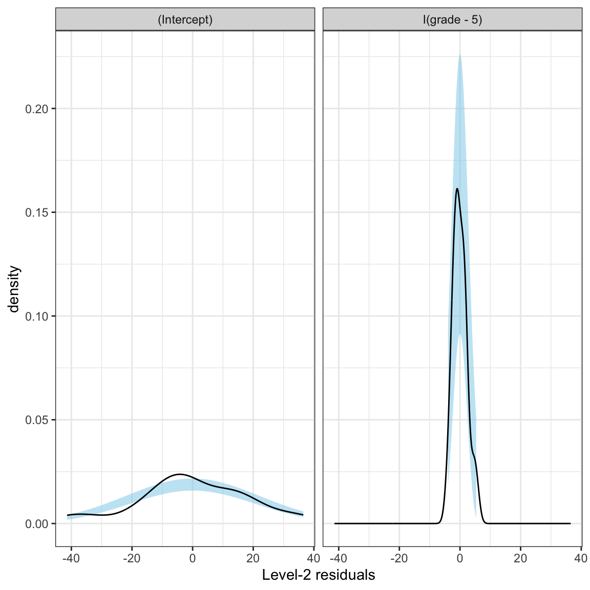
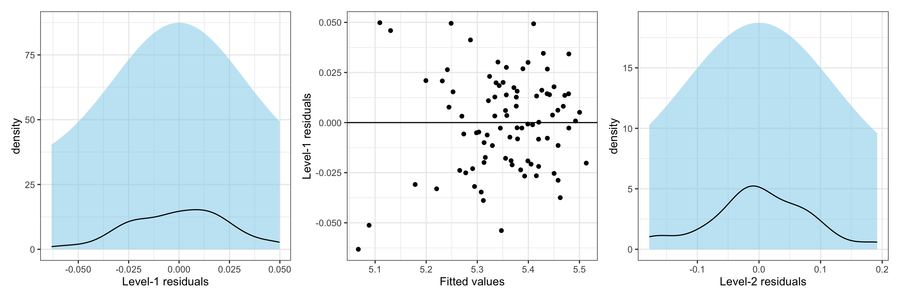
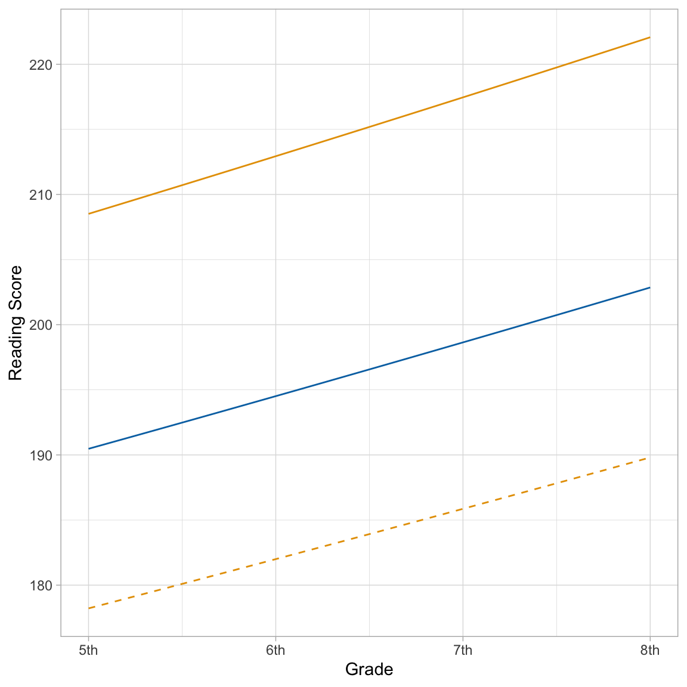

Linear Mixed-Effects Models: Alternative Representations and Assumptions
In this set of notes, you will learn alternative ways of representing the linear mixed-effects model. You will also learn about the underlying assumptions for the linear mixed-effects model, as well as how to evaluate them empirically. To do this, we will use data from the file minneapolis.csv to analyze change in students’ reading scores over time.
# Load libraries
library(broom.mixed) #for tidy, glance, and augment functions for lme4 models
library(educate)
library(lme4) #for fitting mixed-effects models
library(patchwork)
library(tidyverse)
# Read in data
mpls = read_csv("https://raw.githubusercontent.com/zief0002/bespectacled-antelope/main/data/minneapolis.csv")
# View data
mplsTo illustrate some the concepts in this set of notes, we will consider the following three models:
\[ \begin{split} \mathbf{Model~1:~~}\mathrm{Reading~Score}_{ij} = &\big[\beta_0 + b_{0j}\big] + \beta_1(\mathrm{Grade}_{ij}-5) + \\ &~~\beta_2(\mathrm{Special~Education}_j)+ \epsilon_{ij}\\[2em] \mathbf{Model~2:~~}\mathrm{Reading~Score}_{ij} = &\big[\beta_0 + b_{0j}\big] + \big[\beta_1 + b_{1j}\big](\mathrm{Grade}_{ij}-5) + \\ &~~\beta_2(\mathrm{Special~Education}_j) + \epsilon_{ij}\\[2em] \mathbf{Model~3:~~}\mathrm{Reading~Score}_{ij} = &\big[\beta_0 + b_{0j}\big] + \big[\beta_1 + b_{1j}\big](\mathrm{Grade}_{ij}-5) + \\ &~~\beta_2(\mathrm{Special~Education}_j) + \\ &~~\beta_3(\mathrm{Grade}_{ij}-5)(\mathrm{Special~Education}_j) + \epsilon_{ij} \end{split} \]
where,
- \(\mathrm{Reading~Score}_{ij}\) is the reading score for Student j at time point i;
- \(\beta_0\) is the fixed-effect of intercept;
- \(b_{0j}\) is the random-effect of intercept for Student j;
- \(\beta_1\) is the fixed-effect of grade-level;
- \(b_{1j}\) is the random-effect of grade-level for Student j;
- \(\beta_2\) is the fixed-effect of special education status;
- \(\beta_3\) is the interaction-effect (fixed-effect) between special education status grade-level; and
- \(\epsilon_{ij}\) is the error for Student j at time point i.
This representation of the models is referred to as the composite model or the mixed-effects model since they include both the fixed- and random-effects in the same equation.
Writing the Statistical Model as a Set of Multilevel Equations
Another way we can express the model is by separating the mixed-effects model equation into multiple equations; one for each level of variation. For example, each of the mixed-effects models listed above could be separated into two equations: a Level-1 equation that includes effects and residuals that explain the within-student variation and a set of Level-2 equations that include the effects and residuals that explain the between-student variation. As an example, take the equation for Model 1:
\[ \begin{split} \mathrm{Reading~Score}_{ij} = &\big[\beta_0 + b_{0j}\big] + \beta_1(\mathrm{Grade}_{ij}-5) + \\ &~~\beta_2(\mathrm{Special~Education}_j) + \epsilon_{ij} \end{split} \]
We initially write the Level-1 equation which includes the effect for the intercept, an effect for each of the within-student predictors, and the within-student error term from the mixed-effects model. When writing the Level-1 model, we add a j subscript to the intercept and predictor effects to indicate that the particular effect may be unique to a particular student. The Level-1 equation for Model 1 is:
\[ \mathrm{Reading~Score}_{ij} = \beta_{0j} + \beta_{1j}(\mathrm{Grade~Level}_{ij}) + \epsilon_{ij} \]
The Level-1 equation describes the within-student variation in reading scores. It says that this variation is decomposed into that which is explained by differences in grade-level and unexplained random error. Remember, the j subscript indicates that the term may vary across students. So from this equation we can see that the intercept and effect of grade-level may vary across students. (We won’t know for sure whether they vary or not until we see the level-2 equations.)
After writing the Level-1 equation, we can write out the Level-2 equation(s). There will be a Level-2 equation for each of the effects in the Level-1 model. In our example, since we have two effects in the Level-1 model (\(\beta_{0j}\) and \(\beta_{1j}\)), there will be two Level-2 equations. In each Level-2 equations, the outcome is one of the effects from the Level-1 equation. These equations describe how the student-specific intercept and slopes differ across students. As such, they include the random-effects and any student-level effects from the mixed-effects representation. For example, we can write the Level-2 equations for Model 2 as:
\[ \begin{split} \beta_{0j} &= \beta_0 + \beta_2(\mathrm{Special~Education}_j) + b_{0j} \\ \beta_{1j} &= \beta_1\\ \end{split} \]
These equations indicate that the student-specific intercepts are a function of some part common to all schools (\(\beta_0\)), an effect of special education status (\(\beta_2\)), and student-to-student error (\(b_{0j}\)). The random-effect is the reason that students can have different intercepts. The student-specific slope (\(\beta_{1j}\)), on the other hand, does not vary across students; it is the same for each student. This is because there is no random-effect for slope in Model 1.
Together these equations are referred to as the set of multilevel equations:
\[ \begin{split} &\mathbf{Level\mbox{-}1:}\\ &\qquad\mathrm{Reading~Score}_{ij} = \beta_{0j} + \beta_{1j}(\mathrm{Grade~Level}_{ij}) + \epsilon_{ij}\\ &\mathbf{Level\mbox{-}2:}\\ &\qquad\beta_{0j} = \beta_0 + \beta_2(\mathrm{Special~Education}_j) b_{0j}\\ &\qquad\beta_{1j} = \beta_1\\ \end{split} \]
Multilevel Equation for Model 2
As a second example, consider the composite (mixed-effects) model for Model 2:
\[ \begin{split} \mathrm{Reading~Score}_{ij} = &\big[\beta_0 + b_{0j}\big] + \big[\beta_1 + b_{1j}\big](\mathrm{Grade}_{ij}-5) +\\ &~~\beta_2(\mathrm{Special~Education}_j) + \epsilon_{ij} \end{split} \]
The Level-1 equation is again:
\[ \mathrm{Reading~Score}_{ij} = \beta_{0j} + \beta_{1j}(\mathrm{Grade~Level}_{ij}) + \epsilon_{ij} \]
The Level-2 equations are:
\[ \begin{split} \beta_{0j} &= \beta_0 + \beta_2(\mathrm{Special~Education}_j) + b_{0j} \\ \beta_{1j} &= \beta_1 + b_{1j}\\ \end{split} \]
The Level-2 intercept equation hasn’t changed from that for Model 1. However, the equation for the effect of grade-level now includes the random-effect of slope. This means that student’s growth rate is allowed to vary from the average.
Going from Multilevel Equations to the Mixed-Effects Model
If we have the multilevel equations, we can substitute the Level-2 equation(s) into the Level-1 equation to get the composite equation or mixed-effects equation. For example, for Model 2, substituting \(\beta_0 + \beta_2(\mathrm{Special~Education}_j) + b_{0j}\) into \(\beta_{0j}\) and \(\beta_1 + b_{1j}\) into \(\beta_{1j}\) gives us:
\[ \mathrm{Reading~Score}_{ij} = \bigg[\beta_0 + \beta_2(\mathrm{Special~Education}_j) + b_{0j}\bigg] + \bigg[\beta_1 + b_{1j}\bigg](\mathrm{Grade~Level}_{ij}) + \epsilon_{ij} \]
Re-arranging this:
\[ \begin{split} \mathrm{Reading~Score}_{ij} = &\bigg[\beta_0 + b_{0j}\bigg] + \bigg[\beta_1 + b_{1j}\bigg](\mathrm{Grade~Level}_{ij}) + \\ &~~\beta_2(\mathrm{Special~Education}_j) + \epsilon_{ij} \end{split} \]
Model 3: Interaction Effect with Time Predictor
Recall the composite (a.k.a., mixed-effects) expression of Model 3 was:
\[ \begin{split} \mathrm{Reading~Score}_{ij} = &\big[\beta_0 + b_{0j}\big] + \big[\beta_1 + b_{1j}\big](\mathrm{Grade}_{ij}-5) + \\ &~~\beta_2(\mathrm{Special~Education}_j) + \\ &~~\beta_3(\mathrm{Grade}_{ij}-5)(\mathrm{Special~Education}_j) + \epsilon_{ij} \end{split} \]
This model includes an interaction effect between the time predictor (grade-level) and the special education status predictor. Let’s dRe-express this model by distributing the time predictor across the fixed- and random-effects of slope, and move all the terms with a time predictor so they are together in the equation, and all the terms without a time predictor together. (I will use large square brackets to show this grouping.) The within-student residual will stay at the end of the equation.
\[ \begin{split} \mathrm{Reading~Score}_{ij} = &\bigg[\beta_0 + \beta_2(\mathrm{Special~Education}_j) + b_{0j}\bigg] + \\ &\bigg[\beta_1(\mathrm{Grade}_{ij}-5) + \beta_3(\mathrm{Grade}_{ij}-5)(\mathrm{Special~Education}_j) + b_{1j}(\mathrm{Grade}_{ij}-5)\bigg] + \epsilon_{ij} \end{split} \]
Extracting the time predictor from the second group:
\[ \begin{split} \mathrm{Reading~Score}_{ij} = &\bigg[\underbrace{\beta_0 + \beta_2(\mathrm{Special~Education}_j) + b_{0j}}_{\beta_{0j}}\bigg] + \\ &\bigg[\underbrace{\beta_1 +\beta_3(\mathrm{Special~Education}_j) + b_{1j}}_{\beta_{1j}}\bigg](\mathrm{Grade}_{ij}-5) + \epsilon_{ij} \end{split} \]
This helps us write the multilevel equations:
\[ \begin{split} &\mathbf{Level\mbox{-}1:}\\ &\qquad\mathrm{Reading~Score}_{ij} = \beta_{0j} + \beta_{1j}(\mathrm{Grade}_{ij}-5) + \epsilon_{ij}\\ &\mathbf{Level\mbox{-}2:}\\ &\qquad\beta_{0j} = \beta_0 + \beta_2(\mathrm{Special~Education}_j) + b_{0j}\\ &\qquad\beta_{1j} = \beta_1 + \beta_3(\mathrm{Special~Education}_j) + b_{1j}\ \end{split} \]
You can substitute the Level-2 equations back into the Level-1 equation and that should give you the initial composite equation.
Notice that between-student predictors that are main-effects appear in the Level-2 intercept equation, and between-student predictors that are included in an interaction-effect with a within-student predictor appear in the Level-2 slope equation. Because we need to include the main-effects of any predictor that is also a part of an interaction term, any predictors included in the Level-2 slope equation also need to be included in the Level-2 intercept equation.
Guidelines for Writing the Multilevel Equations
Here are some guidelines in helping you think about writing multilevel equations.
- Write the Level-1 equation first. This will be an equation that expresses the outcome’s relationship to a series of within-student parameters, and a within-student residual.
- The number of within-student parameters in the Level-1 equation (aside from the residual) dictate the number of Level-2 equations you will have.
- The within-student parameters from the Level-1 equation will be the outcomes in the Level-2 equations.
- Random-effects are the residuals in the Level-2 equations, and therefore are in the Level-2 equations; one per equation.
- Variables from the data go to their appropriate level. For example within-student variables (i.e., having an ij subscript) will be put in the Level-1 equation, and between-student predictors (i.e., having only a j subscript) will be put in one or more of the Level-2 equations.
Multilevel Equations for Fixed-Effects Models
Our conventional fixed-effects regression models (LM) can also be expressed as a multilevel model. For example, consider the fixed-effect model that includes an intercept and effect of grade-level:
\[ \mathrm{Reading~Score}_{i} = \beta_{0} + \beta_{1}(\mathrm{Grade}_{i}-5) + \epsilon_{i} \]
The multilevel model would specify that the Level-2 equations would only include fixed-effects (no random-effects). Thus when we substitute them back into the Level-1 model we only have fixed-effects in the model:
\[ \begin{split} \mathbf{Level\mbox{-}1:}\\ &~ \mathrm{Reading~Score}_{ij} = \beta_{0j} + \beta_{1j}(\mathrm{Grade}_{ij}-5) + \epsilon_{ij}\\ \mathbf{Level\mbox{-}2:}\\ &~ \beta_{0j} = \beta_{0}\\ &~ \beta_{1j} = \beta_{1} \end{split} \]
Why are Multilevel Expressions Helpful?
Expressing the model as a set of multilevel equations can be helpful for readers. First, it explicitly separates the sources of variation and the predictors of these sources of variation into different levels. In our example there are two sources of variation: within-student variation and between-student variation. The Level-1 model attempts to describe the within-student variation and, hence, only includes within-student predictors. The Level-2 models attempts to describe the between-student variation and only includes between-student predictors.
Secondly, the multilevel expression of the model helps us think about what the predictors at each level are actually doing. Level-1 predictors explain variation in the outcome. In our example, they are explaining variation in students’ reading scores. The Level-2 predictors are explaining variation in the student-specific intercepts and slopes—they explain Level-2 variation.
Thirdly, the multilevel expression of the model helps us see that the random-effects are residuals; they are residuals of the Level-2 models. This helps us think about the more general statistical model. For example, the general statistical model for a model that includes fixed-effects of two predictors and a random-effect of intercept is:
\[ \begin{split} \mathbf{Level\mbox{-}1:}\\ &~ Y_{ij} = \beta_{0j} + \beta_{1j}(X_{1ij}) + \beta_{2j}(X_{2ij}) + \epsilon_{ij}\\ \mathbf{Level\mbox{-}2:}\\ &~ \beta_{0j} = \beta_{0} + b_{0j}\\ &~ \beta_{1j} = \beta_{1} \\ &~ \beta_{2j} = \beta_{2} \end{split} \]
where
\[ \begin{split} \epsilon_{ij} &\sim \mathcal{N}\bigg(0,\sigma^2_{\epsilon}\bigg)\\[1em] b_{0j} &\sim \mathcal{N}\bigg(0,\sigma^2_{0}\bigg) \end{split} \]
In the mixed-effects model we put distributional assumptions on both the Level-1 residuals and the Level-2 residuals.
Evaluating the Assumptions: An Example
Evaluating the assumptions in a mixed-effects model is a bit more complicated than it is in a fixed-effects model since the mixed-effects model includes multiple residuals; Level-1 residuals and the Level-2 residuals. There are also potential assumptions bout the covariances between the Level-2 residuals, depending on the model that was fitted. To simplify things, in this course, we will evaluate the distributional assumptions placed on the Level-1 residuals, and we will also evaluate the normality assumption on the random-effects.
To illustrate assumption checking in practice, we will evaluate the assumptions for fitting Model 2. Recall that the multilevel expression of Model 2 was:
\[ \begin{split} &\mathbf{Level\mbox{-}1:}\\ &\qquad\mathrm{Reading~Score}_{ij} = \beta_{0j} + \beta_{1j}(\mathrm{Grade}_{ij}-5) + \epsilon_{ij}\\[2ex] &\mathbf{Level\mbox{-}2:}\\ &\qquad\beta_{0j} = \beta_0 + \beta_2(\mathrm{Special~Education}_j) + b_{0j}\\ &\qquad\beta_{1j} = \beta_1 + b_{1j}\\ \end{split} \]
where,
\[ \begin{split} \epsilon_{ij} &\sim \mathcal{N}\bigg(0,\sigma^2_{\epsilon}\bigg)\\[1em] b_{0j} &\sim \mathcal{N}\bigg(0,\sigma^2_{0}\bigg) \\[1em] b_{1j} &\sim \mathcal{N}\bigg(0,\sigma^2_{1}\bigg) \end{split} \]
The assumptions are based on the Level-1 residuals (\(\epsilon_{ij}\)) and the Level-2 residuals, or random-effects (\(b_{0j}\) and \(b_{1j}\)).1 So we need to examine the distributions of those three components. To begin, we will fit the mixed-effects model, which is:
\[ \mathrm{Reading~Score}_{ij} = \beta_0 + \beta_1(\mathrm{Grade}_{ij}-5) + \beta_2(\mathrm{Special~Education}_j) + b_{0j} + b_{1j}(\mathrm{Grade}_{ij}-5) + \epsilon_{ij} \]
# Fit Model 2
lmer.2 = lmer(reading_score ~ 1 + I(grade-5) + special_ed + (1 + I(grade-5) | student_id),
data = mpls, REML = FALSE)Evaluate Assumptions about the Level-1 Residuals
We will evaluate the Level-1 residuals in the exact same way we evalauted the residuals from a fixed-effects (LM) analysis. The augment() function from the {broom.mixed} package produces the Level-1 residuals and fitted values.
# Augment the model to get the Level-1 residuals and fitted values
out_2 = augment(lmer.2)
# View
out_2The Level-1 residuals are found in the .resid column, and the .fitted column contains the \(\hat{Y}\) values. As with LM residual analysis, we want to examine the normality of the residuals in a density plot (or some other plot that allows you to evaluate this), and the other assumptions by plotting the residuals against the fitted values in a scatterplot.
# Density plot of the level-1 residuals
p1 = ggplot(data = out_2, aes(x = .resid)) +
stat_density_confidence(model = "normal") +
stat_density(geom = "line") +
theme_bw() +
xlab("Level-1 residuals")
# Scatterplot of the Level-1 residuals versus the fitted values
p2 = ggplot(data = out_2, aes(x = .fitted, y = .resid)) +
geom_point() +
geom_smooth() +
geom_hline(yintercept = 0) +
theme_bw() +
xlab("Fitted values") +
ylab("Level-1 residuals")
# Plot side-by-side
p1 | p2
Based on the plots, the distributional assumptions for the Level-1 residuals seem reasonably satisfied. The density plot suggests that the normality assumption is tenable. The scatterplot shows symmetry around the \(Y=0\) line (average residual is 0), and that the data are consistent with the assumption of homoskedasticity.
Assumptions about the Random-Effects
We also need to examine the assumptions for any random-effects included in the model. For this course, we will examine the normality assumption. In our example that means we need to examine the normality assumption about the intercept and grade-level random-effects. To do this we need to extract the random-effects from the model into a data frame so we can use ggplot2 functions to evaluate normality.
# Obtain a data frame of the random-effects
level_2 = tidy(lmer.2, effects = "ran_vals")
# View random-effects
level_2Recall that this tibble includes both the intercept and the grade-level random-effects. We will facet_wrap() on the term column to plot each of these distributions separately.
# Density plot of the RE for intercept
ggplot(data = level_2, aes(x = estimate)) +
stat_density_confidence(model = "normal") +
stat_density(geom = "line") +
theme_bw() +
xlab("Level-2 residuals") +
facet_wrap(~term)
Neither distribution of random-effects seem consistent with the assumption of normality.
Fixing the Model to Better Meet the Assumptions
Given the incredibly small amount of variation in the random-effects of grade-level, we will only include a random-effect for intercept in the model. Examination of the assumptions for this model (not shown) results in good fit to the Level-1 residual assumptions and some slight mis-fit to the normality assumption of the Level-2 residuals, with the resulting distribution being slightly right-skewed.
Note that, in practice, the violation of the normality assumption would not be a deal breaker since the remaining assumptions were met in this model. However, to facilitate understanding of log-transformations in these models, we will fit and interpret a log-transformed model.
Similar to fixed-effects models, we can apply transformations to the outcome or any of the continuous predictors. Here the log-transform can be applied to the outcome to help alleviate the non-normality we observed in the Level-2 residuals. (There are no 0 values or negative values in the outcome, so we can directly apply the log-transformation.)
# Fit model
lmer.3 = lmer(log(reading_score) ~ 1 + I(grade-5) + special_ed +
(1 | student_id), data = mpls, REML = FALSE)
# Augment model
out_3 = augment(lmer.3)
# Obtain a data frame of the random-effects
level_2 = tidy(lmer.3, effects = "ran_vals")
# Density plot of the level-1 residuals
p1 = ggplot(data = out_3, aes(x = .resid)) +
stat_density_confidence(model = "normal") +
stat_density(geom = "line") +
theme_bw() +
xlab("Level-1 residuals")
# Scatterplot of the Level-1 residuals versus the fitted values
p2 = ggplot(data = out_3, aes(x = .fitted, y = .resid)) +
geom_point() +
geom_hline(yintercept = 0) +
theme_bw() +
xlab("Fitted values") +
ylab("Level-1 residuals")
# Density plot of the level-2 residuals (RE of intercept)
p3 = ggplot(data = level_2, aes(x = estimate)) +
stat_density_confidence(model = "normal") +
stat_density(geom = "line") +
theme_bw() +
xlab("Level-2 residuals")
# Plot side-by-side
p1 | p2 | p3
The plots suggest that all the distributional assumptions for the Level-1 residuals are tenable. The density plot of the level-2 residuals also shows consistency with the assumption of normality.
Interpreting the Output from the Log-Transformed Model
We interpret fixed-effect coefficients from the LMER similar to those from the LM. We now just apply the same interpretational changes that we did when previously log-transformed the outcomes.
tidy(lmer.3, effects = "fixed")- The intercept is the average log-transformed reading score for non-special education students in the 5th grade. Back-transforming this, we find the average reading score for these students is \(e^{5.34} = 208.52\).
- Back-transforming the grade-level effect, we find that each one grade difference is associated with a 2% (\(e^{0.021} = 1.02\)) increase in reading scores, on average, after controlling for differences in special education status.
- Back-transforming the special education status effect, we find that special education students have reading scores that are \(e^{-0.0905} = 0.91\) times those for non-special education students, on average, after controlling for differences in grade-level.
We can also plot the average growth trajectory and any individual students’ growth trajectories for the back-transformed models to aid in the interpretation.
ggplot(data = mpls, aes(x = (grade-5), y = reading_score)) +
geom_function(fun = function(x){exp(5.34 - 0.0905 + 0.0210*x)}, color = "#0072B2") + #SpEd (Avg)
geom_function(fun = function(x){exp(5.34 + 0.0210*x)}, color = "#E69F00") + #Non-SpEd (Avg)
geom_function(fun = function(x){exp(5.34 - 0.157 + 0.0210*x)}, color = "#E69F00", linetype = "dashed") + #Student 1; non-SpEd
theme_light() +
scale_x_continuous(
name = "Grade",
breaks = c(0, 1, 2, 3),
labels = c("5th", "6th", "7th", "8th")
) +
ylab("Reading Score")
The almost linear rate-of-change is further indication that the log-transformation is probably not necessary.
Footnotes
Technically, there is also a covariance between \(b_{0j}\) and \(b_{1j}\), but this term does not play into the assumptions.↩︎